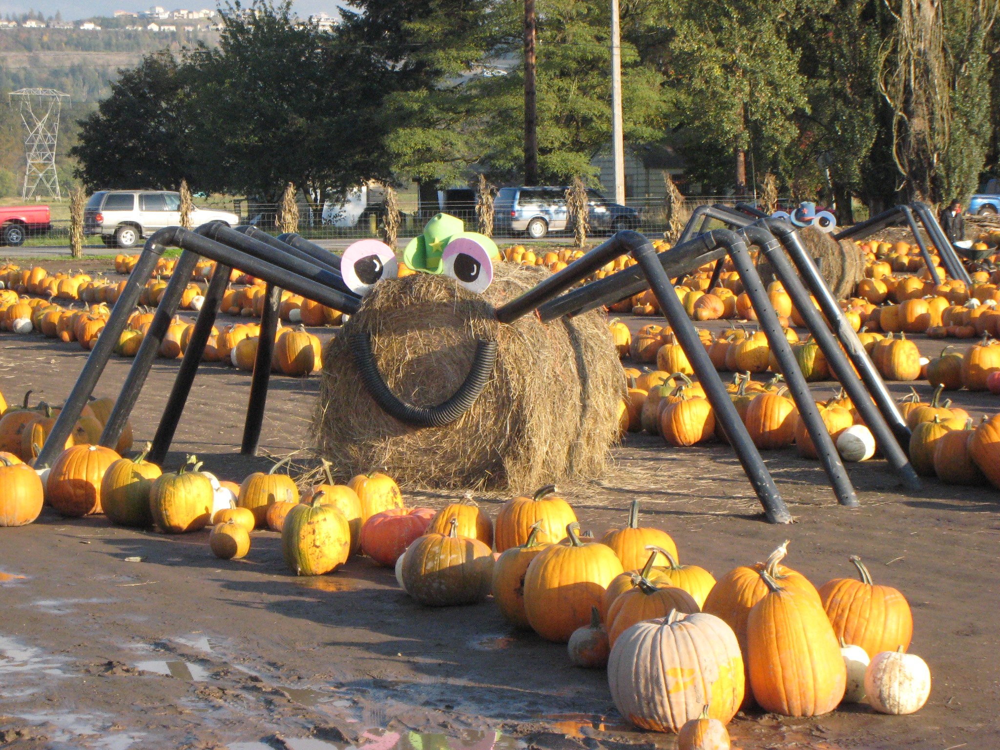

Fall in Tacoma is a time of eating, pumpkin-themed activities, and spending time with family. Halloween tops off fall as the season's biggest festivity. This webpage is dedicated to describing Tacoma's special way of celebrating fall.
Spooner Farms, located right outside of Tacoma in Puyallup, has a pumpkin patch full of family fun. They also have a corn maze and spiders like this for a great family photo-op.
The festival will be happening from September 28th- October 31st
Another fun attraction in Fall is haunted houses! In Tacoma, the scariest event of the year is at FreightHouse Station on 2501 East G Street, Tacoma. The event runs on October 10-12, 17-19, 24-26, and 31-2 from 7:00-10:00 on Thursdays and 7:00-11:00 on Fridays and Saturdays. It is around $15 per person.
Citations:
http://www.spoonerberries.com/wp-content/uploads/2011/09/IMG_1495.jpg (Spooner farms photo)
http://www.spoonerberries.com/harvest-festival/ (spooner farms page)
https://bloximages.newyork1.vip.townnews.com/stltoday.com/content/tncms/assets/v3/editorial/4/dd/4dd99e26-c51d-5f1d-9b7e-764117e8a318/596e1e41b1074.image.jpg?resize=1200%2C800 (pumpkin title photo)
https://www.tacomahaunts.com/ (haunted house webpage)
https://www.eventbrite.com/e/frighthouse-station-tickets-69194569821?aff=tacomahauntstickets (frighthouse station ticket info)
https://www.youtube.com/watch?v=p-grRJoZOhg#action=share (frighthouse video)
https://www.cookstavern.com/ (cooks tavern)
http://rosewoodcafe.com/ (rosewood cafe)
http://thanbrothers.com/#/ (Pho Than Brothers)
https://www.epicurious.com/recipes/food/views/spiced-pumpkin-bread-840 (pumpkin bread photo)
California Sizzles by the Junior League of Pasadena, Inc.
https://www.livewellbakeoften.com/the-best-carrot-cake-recipe/ (carrot cake recipe)
https://bakingamoment.com/carrot-cake-with-cream-cheese-frosting/ (carrot cake image)